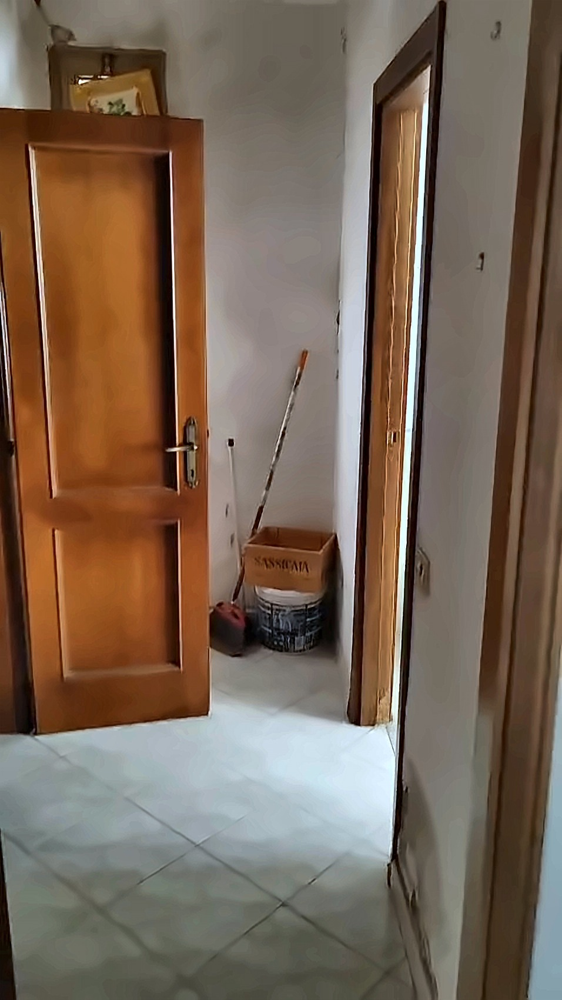
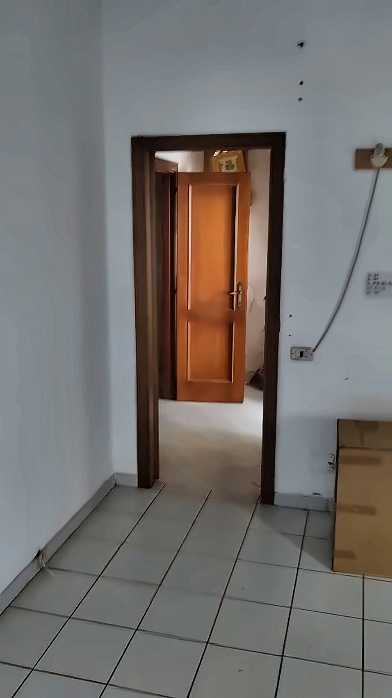

户型户型示意图

房间连接关系由看房视频三维重建并逐帧核对：楼梯口左转即门洞D进大厅；走廊尽头正前方厨房、右侧客厅；大厅另一端门C通小过道，卫生间与卧室都从过道进。墙体尺寸、面积、真实朝向未实测，仅供示意。
看房路线按视频顺序逐间看
第 1 站
入口楼梯间
一层独立入口
一层独立入口，红陶地砖门厅，石材楼梯配木质扶手和磨砂玻璃护板；先上 3 级到小平台，再转向上到楼上。楼梯顶端有采光窗。


第 2 站
楼梯口与走廊
楼上动线枢纽
楼梯上来是楼梯口，有两扇窗，红陶地砖。左转是进大厅的门洞D；沿楼梯半墙护栏往前是走廊，尽头正前方厨房门，右侧客厅门。


第 3 站
厨房
约 8 ㎡ · 估算
双开窗配蓝色窗帘，窗下有燃气取暖器。靠墙吊柜、白瓷砖灶台墙面，抽油烟机位已预留（现贴着报纸）。红陶地砖。另有一扇未开启的门。
抽油烟机位现贴着报纸遮挡，需自配油烟机。


第 4 站
客厅
约 20 ㎡ · 估算
两扇窗，配吊灯与取暖器，白色瓷砖地面。现有沙发、小桌和椅子。远端有一扇未开启的木门，去向为推测。


第 5 站
大厅
约 35 ㎡ · 估算
面积最大的一间，长方形，白色瓷砖地面。三扇窗在同一面长墙，两盏吊灯。一端是通楼梯口的门洞D，另一端是门C通过道。现堆放床垫和杂物。
现堆放床垫、木板和纸箱，出租前需清空。


第 6 站
过道
门C之后
门C后面的小过道，浅色瓷砖，现堆放清洁工具。卫生间和卧室都从这里进。


第 7 站
卫生间
约 6 ㎡ · 估算
白瓷砖到顶，马桶、坐浴盆、立柱洗手盆齐全，配电热水器。有窗（现用布遮挡），有晾衣架。
部分墙砖脱落，窗帘为临时遮布，建议出租前整修。


第 8 站
卧室
约 20 ㎡ · 估算
现有两张单人床、书桌椅和床头柜，木窗配百叶卷帘，一侧有衣柜。墙面有明显水渍霉斑。
墙面有明显水渍霉斑，出租前需处理。


如实告知房屋现状
卧室墙面有明显水渍霉斑，需处理后再出租。
厨房抽油烟机位空置，现用报纸遮挡。
卫生间部分墙砖脱落，窗帘为临时遮布。
大厅堆放床垫、木板、纸箱，需清空。
整体老房，墙面有污迹，建议整体粉刷。